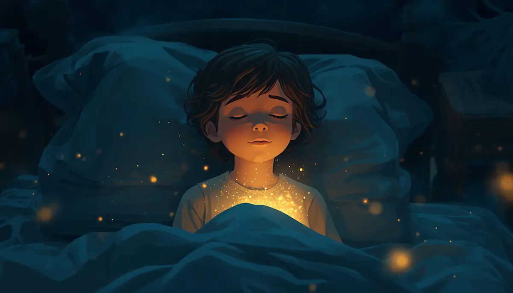
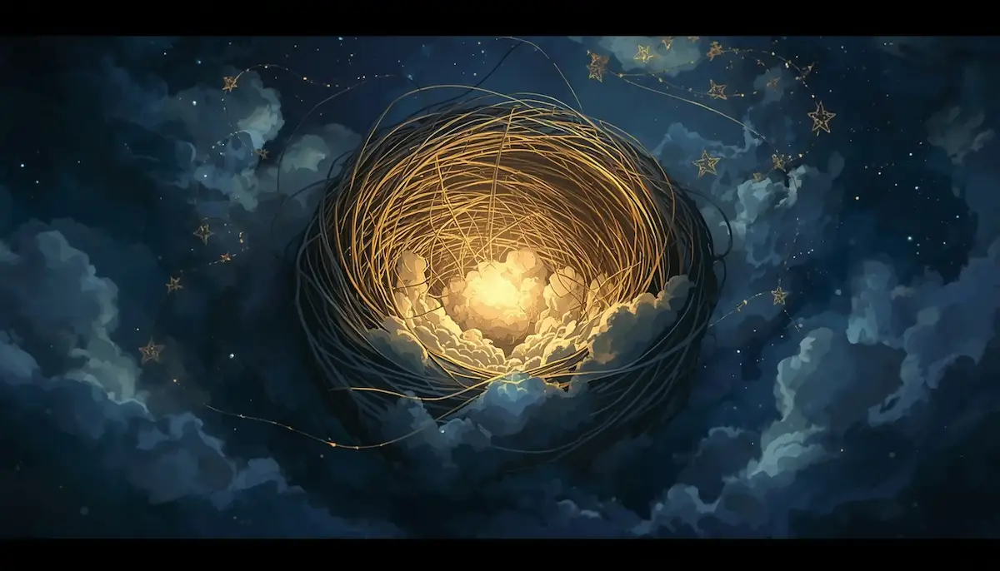

El Viaje al Nido de Estrellas
Hola, pequeño explorador, pequeña exploradora. Qué alegría que estés aquí conmigo. Antes de comenzar nuestro viaje, me gustaría preguntarte… ¿cómo te sientes hoy?.

Tal vez tu día estuvo lleno de saltos y risas, y sientes mucha alegría en el pecho. O tal vez, hubo algún momento en que te sentiste un poquito triste, o tuviste algo de miedo. Quiero que sepas algo muy importante: todas tus emociones son bienvenidas aquí. Es normal sentirse así, y está bien dejar que esos sentimientos nos visiten un ratito.
Ahora, te invito a buscar tu lugar más cómodo. Puede ser tu cama, un cojín blandito o incluso los brazos de alguien que te quiere. Imagina que tu cuerpo se vuelve suave, como si fueras un muñeco de trapo que suelta toda su energía.
Vamos a cerrar los ojos muy suavemente, como si bajaras las persianas de una casita para que entre la calma. Imagina que, poco a poco, empiezas a sentirte ligero, tan ligero como una pluma que flota en el aire.
Tus pies se despegan del suelo y empiezas a subir. Vas dejando atrás los ruidos de la calle, los deberes del cole y las prisas del día. Vas subiendo hacia el cielo azul oscuro de la noche. Mira a tu alrededor… el cielo es como una manta inmensa y suave que nos abraza a todos.
Si aparece algún pensamiento por ahí, como una nube oscura que te preocupa, solo mírala. No te enfades con ella. Imagina que es una nube que el viento se lleva muy despacio, lejos, muy lejos, hasta que el cielo vuelve a quedar despejado y brillante.
Ya casi llegamos. Allí arriba, en lo más alto, hay un lugar especial llamado el Nido de Estrellas. Es un refugio redondo y tibio, hecho de hilos de luz dorada y nubes de algodón.
Al entrar en el nido, sientes un calorcito muy agradable en tu corazón. Es como el abrazo de tu peluche favorito. En este nido, estás totalmente seguro. Nada malo puede pasar aquí. Las estrellas que te rodean brillan solo para ti, y cada una te dice en silencio: "Eres especial, eres valiente y lo estás haciendo muy bien".

Quédate un momento en este nido. Siente cómo tu espalda se apoya en la luz suave. Aquí puedes soltar cualquier cansancio. Si estuviste enfadado o asustado hoy, deja que esa emoción se disuelva en la luz blanca de las estrellas, hasta que solo quede paz dentro de ti.
Es hora de empezar a bajar, pero no te preocupes, porque el brillo de las estrellas se queda guardado dentro de tu pecho, como una linterna que siempre te acompaña.
Bajamos despacio, sintiendo el aire fresco en la cara. Volvemos a tu habitación, a tu manta, a tu almohada. Tu cuerpo ahora se siente un poquito más pesado, tranquilo y listo para un descanso reparador. Recuerda que este nido está siempre dentro de ti, y puedes volver a él siempre que necesites un momento de calma.
Para terminar, vamos a hacer nuestra respiración mágica. Pon tus manitas sobre tu barriga, justo encima del ombligo.
Inspira profundamente por la nariz e imagina que tienes un globo de luz dentro de tu tripita. Mira cómo el globo se infla y tus manos suben. Aguanta el aire un segundito, sintiendo esa luz. Expulsa el aire muy despacio por la boca, como si soplaras una vela sin querer apagarla. Mira cómo tus manos bajan mientras el globo se desinfla.
Hazlo una vez más… Inspira luz… y suelta toda la tensión.
Buenas noches, pequeño gran explorador. Que tus sueños sean tan brillantes como las estrellas.